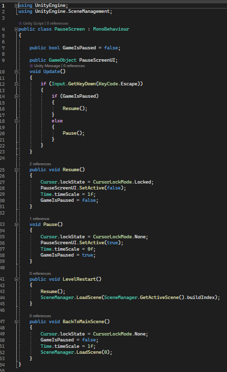

wallmart UltraKill
What is this project about?
this is a first person shooter game. we had to make this game in the 2nd period of the 2nd year, the period was called Vertical slice.
we had to recreate part of a game.
the teachers showed us a 10 second video of the game we had to recreate and we had to recreate it exactly like the 10 seconds that they showed us.
Project date: From November 2023 - February 2024
Project duration: 2 months.
Development Team: 7 people.
Engine: Unity engine
Programming language: C#

My role & contribution in this project.
I was a programmer for this project, my role was to create mechanics for our game. I made the StartScreen and PauseScreen .
as you can see in the Visual Sheet this is the code for the elevator in the back of the start screen i used A loop to make sure that it will look like the elvator is dropping down. for the loop i made a big tube that just spawns back to the start after it comes to the end.

This is the whole code of the elevator in the back of the start screen.
i used a specific amout of speed it would look like you fell down really fast to the ground and so you would not see the next elevator tube spawning,
cause that is what happend in the beginning you would see when the next elevator tube would spawn.
And that something you do not want to see in the game ofcourse.
And there will always be a precisely placed spawnpoint for the next tube so it would not look weird.
And ofcourse there is also a destroy point so the next tube could actually spawn and you would not have stacked up tubes in the game so it would not lag or crash the game.


This is the code for the Pause screen. As you can see in the code,
you have 3 different parts that help with pausing the game.
You have the GameObject called PauseScreenUI that is a canvas, aka the pause screen, that you can see in the picture before.
And then you have the Void Update; in there, I make sure you can use the Escape button to open and close the Pause screen.
You have the Public Void Resume; in there, I make sure the cursor is gone from the screen when you play the game. And with the Void Pause,
I make sure the cursor is back and you can click the buttons on the screen.
The buttons.
If you wanna use the RestartButton, you have to use the code Resume at the same time as the SceneManager.
With the SceneManager, I make sure you go back to the start of the game so you can redo the level.
And then you have the Public Void BackToMainScene() that just makes sure that if you press the Resume button, you can continue playing the game.